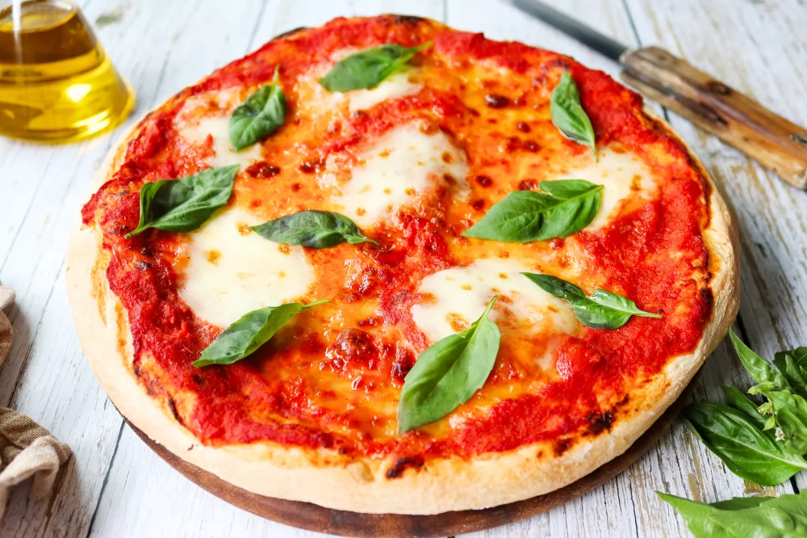

Pizza Margarita

Description
Según se dice, la pizza margarita o margherita
fue creada en 1889 en honor a la reina Margarita de Saboya.
En su creación, la pizza contenía los tres colores de la bandera italiana,
el rojo de la salsa de tomate, el verde de la albahaca y el blanco del queso mozzarella.
La pizza margarita fue además la primera en incorporar queso, todo un hallazgo y es una pizza napolitana de las más típicas.
Para esta receta, os enseñamos cómo hacer la masa de manera fácil y sin que tenga que levar por mucho tiempo. Para conseguirlo, hemos aumentado la cantidad de levadura y hemos reducido el proceso de amasado que lo hemos sustituido por reposos cortos de la masa. Así, el resultado es una masa esponjosa, nada pesada.
Ingredients
Para la masa:
- 250g de harina de fuerza
- 8g de levadura fresca de panadero
- 160ml de agua
- 5g de sal
- 10ml de aceite de oliva extra virgen
Para la cobertura:
- 200g de tomate triturado
- Sal
- 125g de queso mozzarella
- 1 chorro de aceite de oliva extra virgen
- 8 o 10 horas de albahaca
Steps
- Mezclamos un poco los ingredientes del bol y añadimos 5 g de sal a la masa
- Mezclamos un poco los ingredientes del bol y añadimos 5 g de sal a la masa.
- Integramos en la masa 10 ml de aceite de oliva virgen extra.
- Amasamos todos los ingredientes durante 5 o 6 minutos, hasta que quede una masa lisa. Después, dejamos reposar la masa otros 5 o 6 minutos y repetimos este proceso 3 veces más.
- Llevamos la masa a un bol untado con un poco de aceite y lo reservamos para su fermentación en un lugar cálido durante 2 horas.
- Pasado este tiempo, desgasificamos la masa y volvemos a hacer una bola con ella. Llevamos la masa a una superficie enharinada y la tapamos con un trapo para que vuelva a fermentar por segunda vez. Para esta segunda fermentación, solo será necesaria 1 hora.
- Transcurrido el tiempo de la segunda fermentación, cubrimos con papel de horno la bandeja en la que horneamos la pizza. Volcamos la masa de pizza sobre el papel y comenzamos a estirarla desde dentro hacia afuera hasta que quede redonda y fina, con los bordes un poco más altos que el resto de la superficie.
- Para el relleno de la pizza, mezclamos 200 g de tomate triturado con un poco de sal.
- Cubrimos la superficie de la pizza con la salsa de tomate sazonada.
- Con el horno caliente a máxima potencia, y con calor arriba y abajo, introducimos la pizza solo con la salsa de tomate en el horno y la horneamos 2 minutos. La sacamos del horno y repartimos sobre ella 125 g de queso mozzarella en rodajas.
- Horneamos la pizza durante 12 o 13 minutos más y la sacamos del horno. Una vez fuera, vertemos sobre la superficie un chorro de aceite de oliva virgen extra.
- Para terminar, repartimos sobre la superficie 8 o 10 hojas de albahaca.
- Servimos la pizza margarita recién hecha.